Menu barbok'you

Le Moon
Donjon faisable par équipe de 4 à 8 joueurs de level 90 à 120
Durée : environ 45-60 minutes avec le chemin mais en ayant deja drop les carapaces
Prendre pierre de capture level 200
| 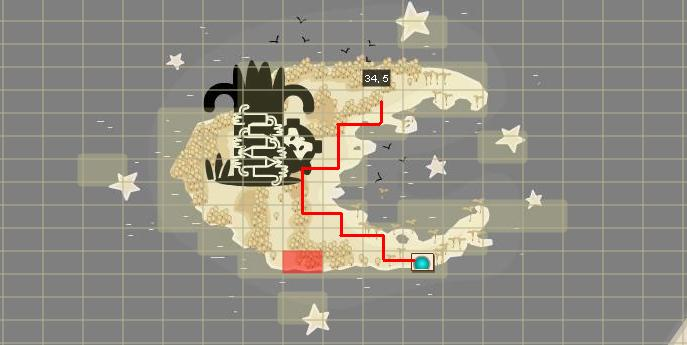 |
|---|
L'entrée se situe donc sur moon. Pour y arrivez, achetez auprés de tailleur les ailes et le casque pour allez sur moon, le canon se trouve en 11/10. |
| 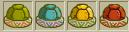 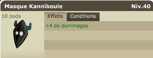 |
|---|
Avant de rentrer dans la foret, assurez vous d'avoir 80 kokokos, un masque de moon (on ne le perd pas donc faites le vous preter au pire) ainsi que les 4 carapaces en objets de quetes (drop sur tortue). |
| 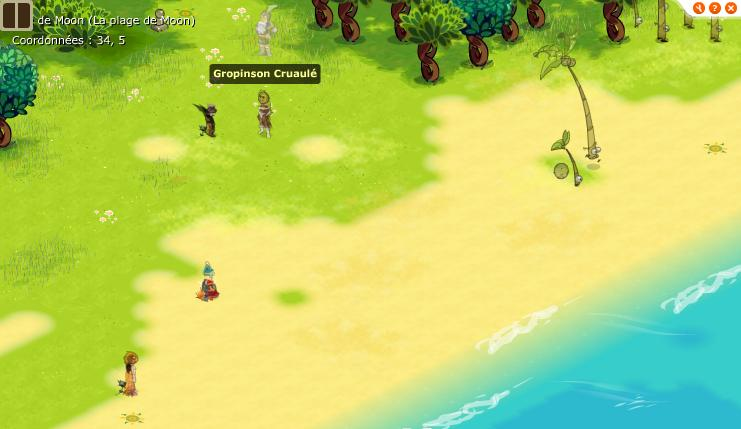 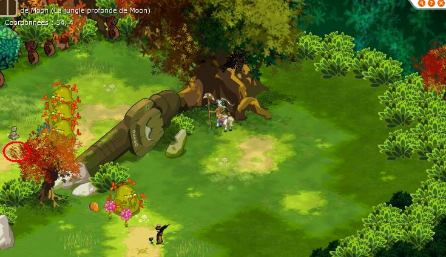 |
|---|
Aprés c'est parti ! Petit labyrinthe, les glouto agressent et sont pas gentils... |
| 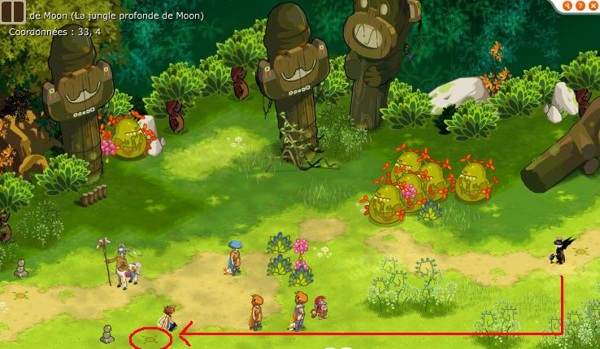 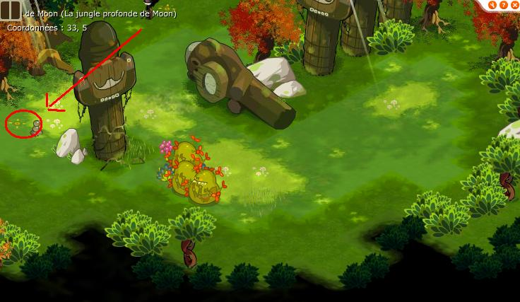 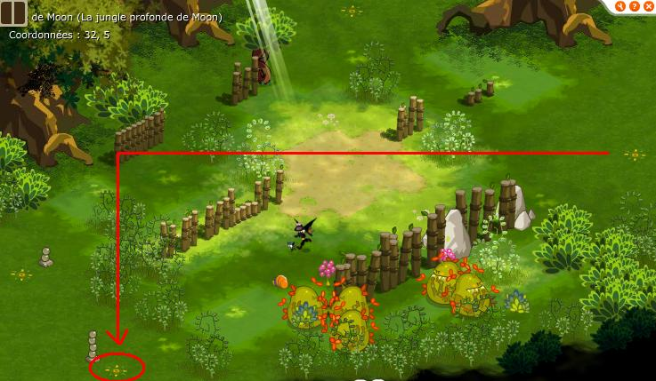 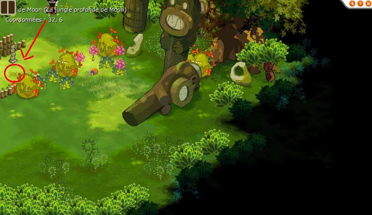 |
|---|
Juste à suivre le chemin en evitant de se perdre... |
| 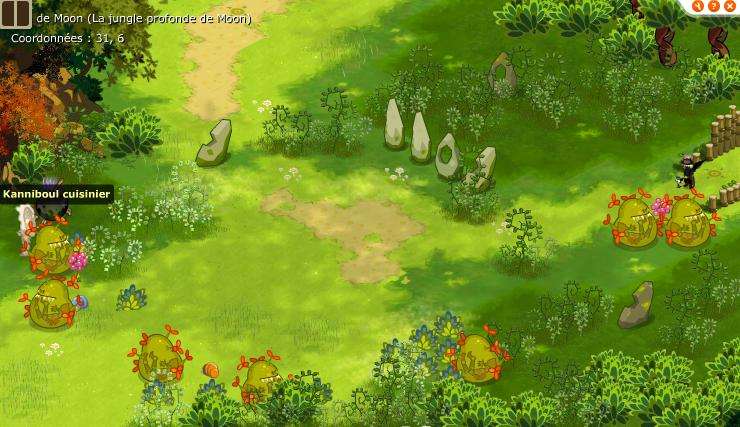 |
|---|
Il faut parler au kanniboule, il vous prend les carapaces qui étaient dans vos quêtes. |
| 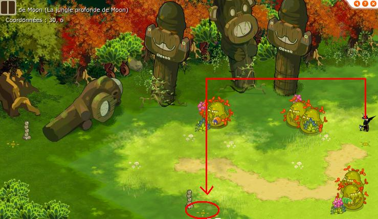 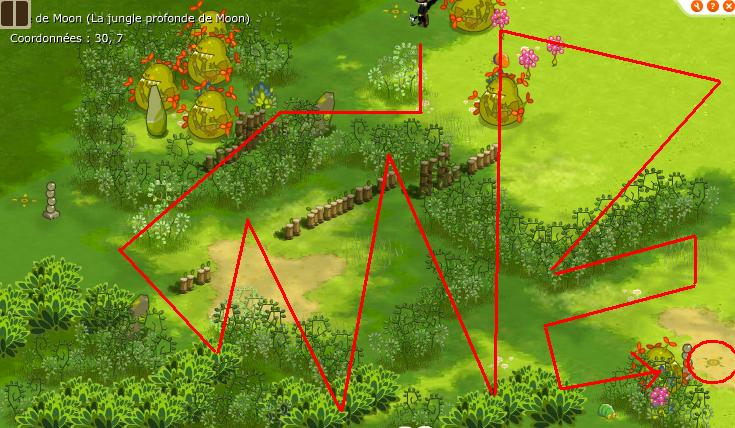 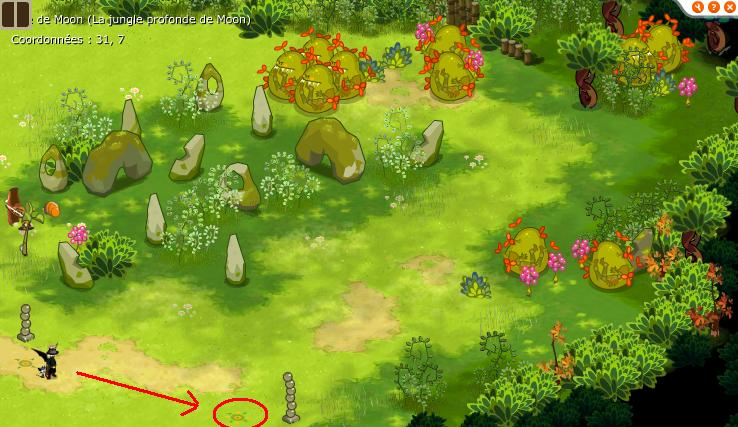 |
|---|
Vous perdez surtout pas ! |
| 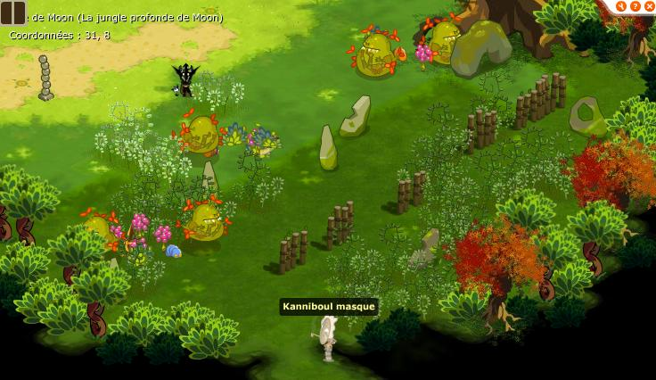 |
|---|
Mettez votre masque kanniboule et parlez au monsieur bizarre ! Ah merde, dommage pour vous, j'ai oublié de vous dire qu'il fallait minimum etre lvl 40... |
| 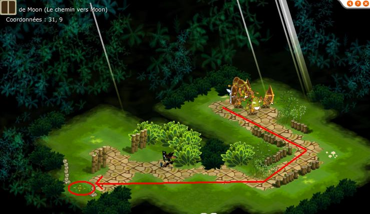 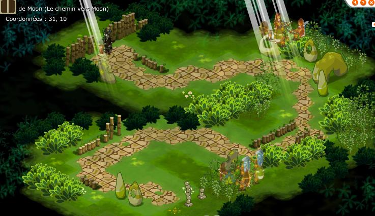 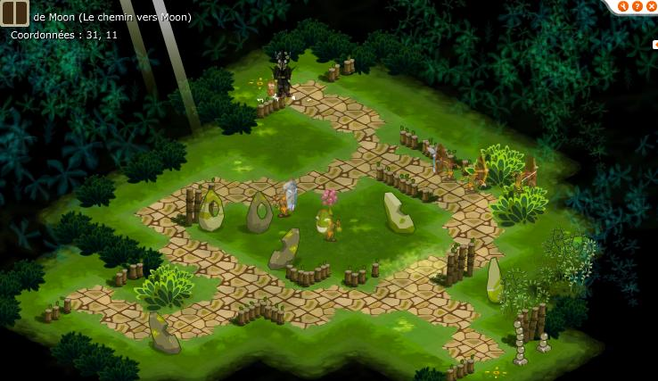 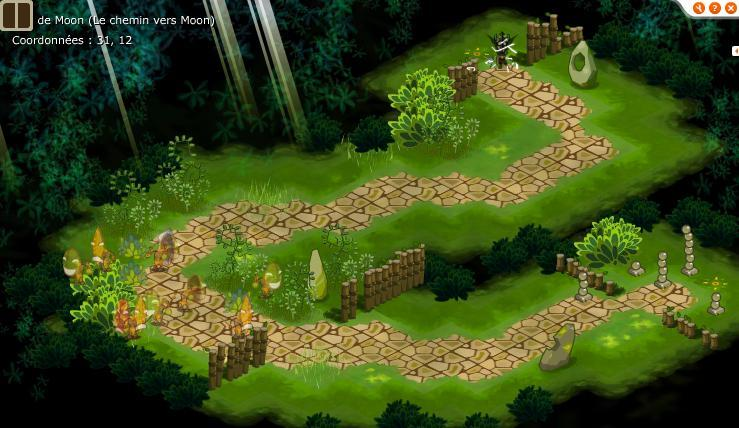 |
|---|
Pareil, prenez votre temps, ca aggresse ! |
| 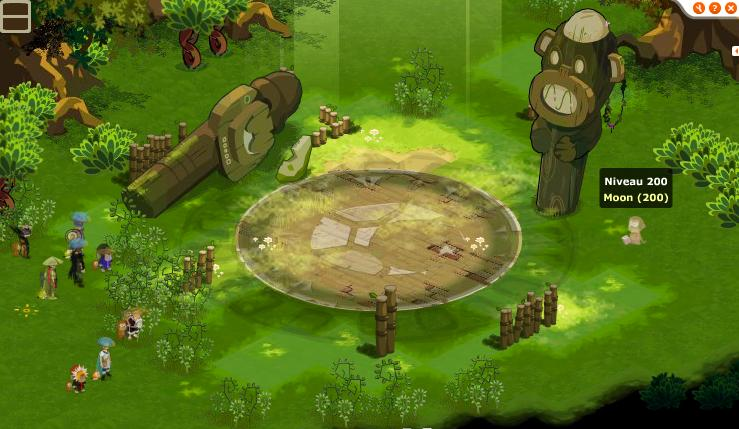 |
|---|
Comme il est mignoooonnnn !! |
| 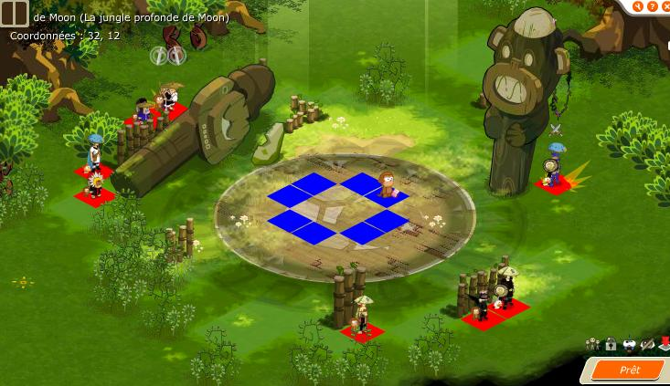 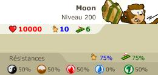 |
|---|
Boss assez dur, il a 50% de résistance partout, sauf dans une caractéristique aléatoire à chaque fois où il a 0%. Je vous conseille d'envoyer quelqu'un avec de l'agilité au cac pour le tacler, il tue sur CC quelque soit vos points de vie et utilise le sort marteau de moon, il invoque parfois d'autres singes. |
| 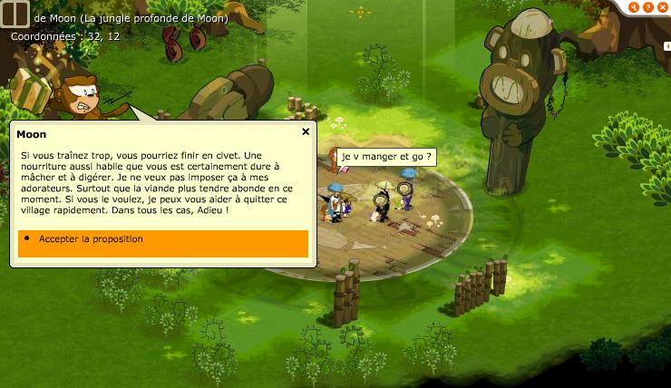 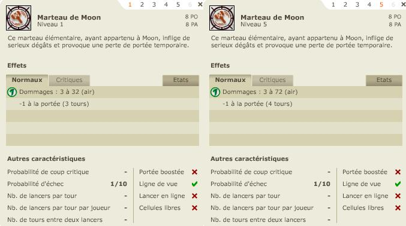 |
|---|
Si vous le battez, vous pourrez apprendre un nouveau sort trés pratique pour les perso agilité, le moon drop des poils de moon sinon... |
Dofus est un MMORPG édité par Ankama." Barbok " est un site non-officiel sans aucun lien avec Ankama.
Toutes les illustrations sont la propriété d'Ankama Studio et de Dofus. Le contenu de ce site a été rédigé initialement par Immortal, il ne s'agit que d'une remise en ligne effectuée par Eternal Games.